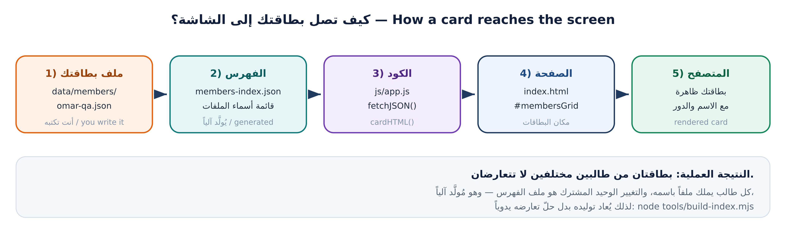

المشروع مُصمَّم بحيث لا يتعارض عمل الطلاب: كل طالب له ملف بطاقة خاص باسمه.
class-team-hub/ ├── index.html الصفحة الرئيسية ├── css/style.css التنسيقات ├── js/app.js يقرأ البيانات ويبني البطاقات ├── data/ │ ├── site-config.json إعدادات الموقع المشتركة │ ├── members-index.json فهرس أسماء البطاقات (مُولَّد آلياً) │ └── members/ بطاقة واحدة لكل طالب ← ملفك هنا ├── sandbox/ مختبر تمارين التعارض ├── tools/build-index.mjs إعادة توليد الفهرس └── tests/validate-members.mjs فحص صحة البطاقات
$ cd ~/projects $ git clone https://github.com/<org>/class-team-hub.git Cloning into 'class-team-hub'... remote: Enumerating objects: 87, done. Unpacking objects: 100% (87/87), done. $ cd class-team-hub $ git remote -v origin https://github.com/<org>/class-team-hub.git (fetch) origin https://github.com/<org>/class-team-hub.git (push)
لا تستخدم زر Download ZIP! النسخة المضغوطة بلا مجلد .git، فلن تستطيع الالتزام ولا الرفع، وستظهر لك fatal: not a git repository.
origin.git — لا تحذفه ولا تعدّله يدوياًاختبار سريع: ls -a — إن لم ترَ .git فأنت لست داخل مستودع.

# الطريقة الأسرع (موصى بها): $ cd ~/projects/class-team-hub $ python3 -m http.server 8000 Serving HTTP on 0.0.0.0 port 8000 ... # افتح المتصفح على: http://localhost:8000 # للإيقاف: Ctrl+C
data/site-config.jsondata/members-index.jsonفتح الملف بالنقر المزدوج (file://) قد يفشل لأن المتصفح يمنع قراءة ملفات JSON محلياً لأسباب أمنية. الحل: خادم محلي كما أعلاه.
$ git log --oneline --graph --all --decorate * a1b2c3d (HEAD -> main, origin/main) Merge pull request #7 from nour/card |\ | * 9f8e7d6 feat(members): add card for nour-dev |/ * 5e6f7a8 Merge pull request #6 from ali-h/card |\ | * 1a2b3c4 feat(members): add card for ali-h |/ * 8de1e7a chore: initial commit of class-team-hub $ git shortlog -sn 4 nour-dev 3 ali-h 1 Workshop Instructor
$ git log -p -- data/members/leen-docs.json # تاريخ ملف واحد بالتفصيل $ git blame data/members/leen-docs.json # من كتب كل سطر f9e8d7c9 (leen-docs 2026-10-06 11:02:40) 1) { f9e8d7c9 (leen-docs 2026-10-06 11:02:40) 2) "fullName": "لينا حدّاد",
data/members-index.json — لأنه يسجّل قائمة البطاقات، فيتغير مع كل بطاقة جديدةالقاعدة القادمة: الملف المُولَّد يُعاد توليده — node tools/build-index.mjs
$ git add data/members/mycards.json fatal: pathspec 'data/members/mycards.json' did not match any files
هذه الرسالة تعني أن الملف غير موجود في المكان الذي كتبته. الأسباب الشائعة:
pwd وls data/members/git يخبرك بالحقيقة: لا يوجد ملف بهذا المسار. اقرأ الرسالة قبل أن تسأل أحداً.
data/members/<username>.jsongit log --graph وحدّدت أكثر الأعضاء مساهمةتذكّر: لا عمل على main. كل تعديل — ولو سطراً — يبدأ من فرع خاص بك.